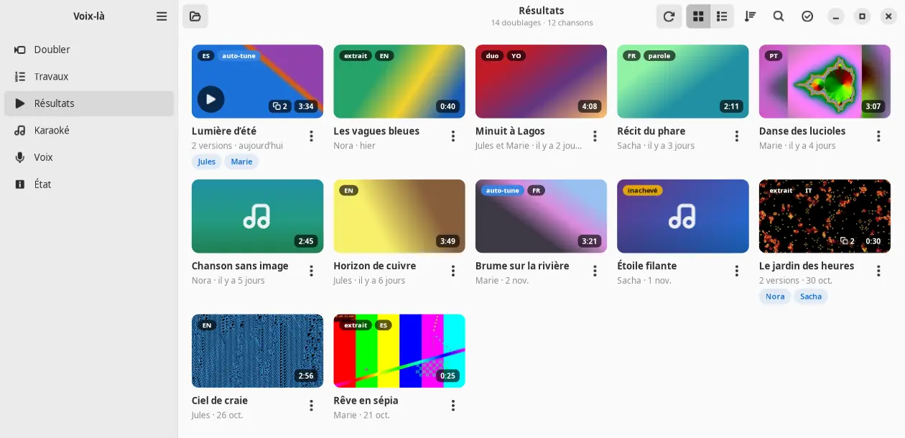
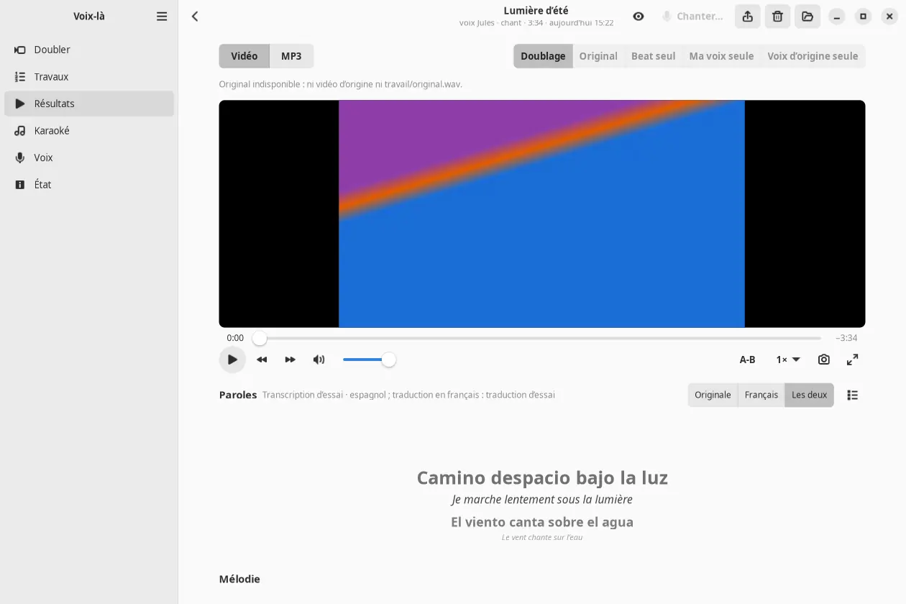
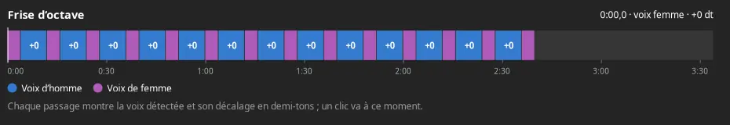
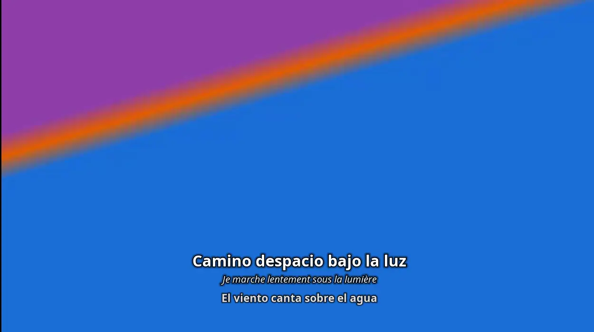
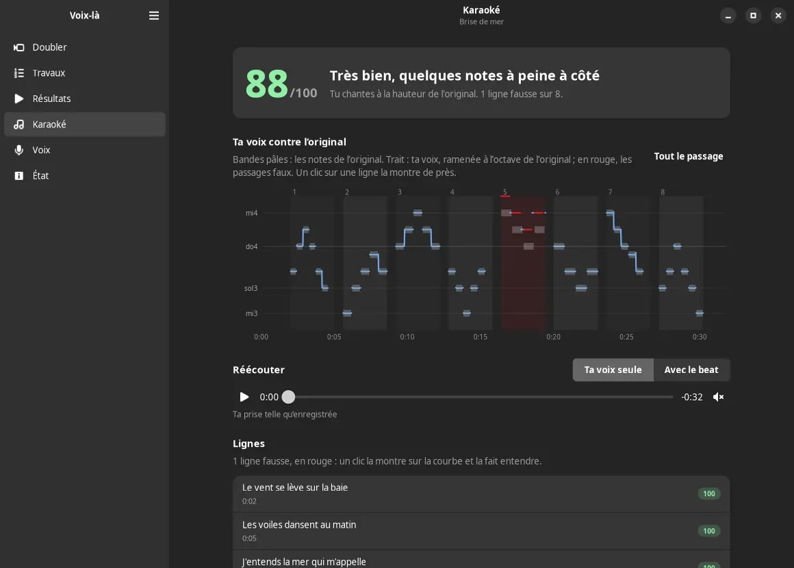
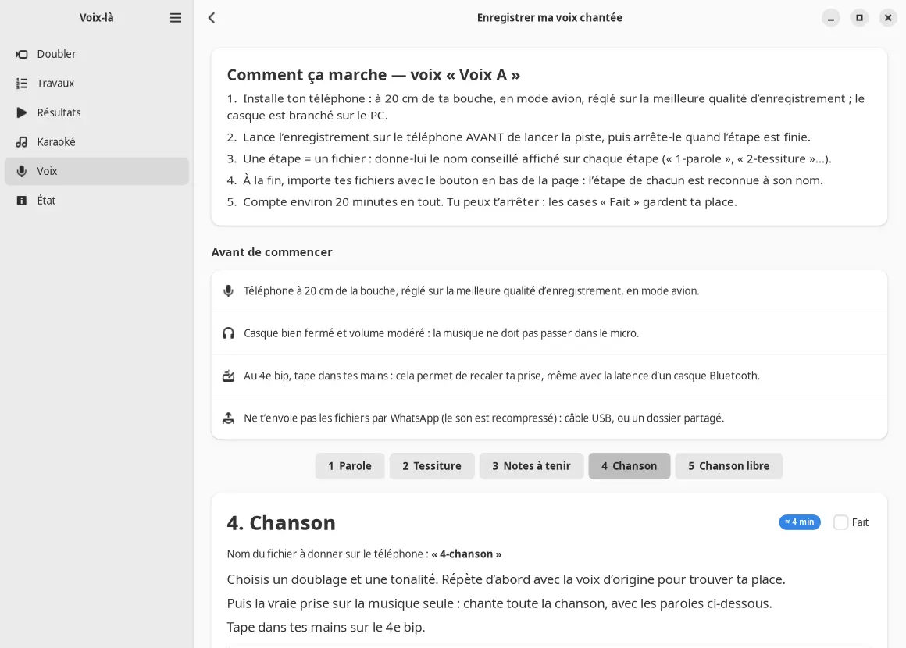

Votre vidéo, avec une autre voix.
Voix-là remplace la voix d'une vidéo ou d'une chanson par une voix clonée, la vôtre ou celle d'une personne d'accord. La mélodie, le phrasé, la musique et l'image restent. Seul le timbre change.

La mélodie reste, le timbre change
On part d'une vidéo (une chanson, un duo, du rap ou de la parole) et d'une voix de référence. On récupère la même vidéo, avec la voix remplacée, et son audio seul.
Ce qui reste
- La mélodie, le phrasé et l'interprétation
- La musique, les bruits et l'ambiance
- L'image et les sous-titres, copiés sans réencodage
- Les nuances de la voix d'origine, suivies de près
Ce qui change
- Le timbre : celui de la voix que vous avez choisie
- La hauteur de la chanson, si la voix en demande une autre (facultatif)
- Les paroles, si vous voulez les voir traduites en français
Six étapes, de la vidéo à la vidéo
Votre PC prépare et finit le travail. Le calcul lourd part sur un GPU gratuit, celui de votre compte Kaggle.
Sur votre PCavant le calcul
- Extraire le sonMp4, mkv, webm ou mov. Le son part en FLAC, avec la voix de référence.
Vous donnez une vidéo, et une voix de référence.
Sur un GPU gratuitnoyau privé de votre compte Kaggle, ou Modal, ou Runpod
- Séparer la voix et la musiqueLe chant est isolé, puis les chœurs sont écartés de la voix principale.
- Nettoyer la voixLa reverb d'origine est retirée : la voix reste sèche pour le clonage.
- Convertir la voixSans entraînement, à partir de quelques secondes de la voix choisie.ChantYingMusic-SVCParoleSeed-VC
En parallèle, les paroles sont transcrites mot à mot, minutées, et traduites en français.
Sur votre PCaprès le calcul
- MixerNuances, dé-esseur, reverb, limiteur à −1 dBTP.
- Remettre dans la vidéoImage et sous-titres copiés tels quels.
Vous recevez la vidéo doublée, et son audio seul en MP3.
Vos fichiers ne vont que dans un jeu de données et un noyau privés de votre compte. Rien n'est envoyé ailleurs.
Une vraie application, pas seulement une commande
Voix-là a une interface GTK 4 et libadwaita, qui s'intègre au bureau Ubuntu, en clair comme en sombre. La commande doubler est dans le même paquet.
Écouter le doublage, comparer à l'original
Le lecteur bascule d'une piste à l'autre au même instant : doublage, original, beat seul, voix convertie, voix d'origine. Les paroles défilent dans la langue chantée et en français.
La frise d'octave montre quelle voix chante chaque passage d'un duo. Un clic corrige à la main.


Plein écran, paroles sur l'image
Le mot chanté se remplit à mesure que la voix avance. Les commandes disparaissent avec le pointeur, et toutes les touches restent actives : Espace, F, V pour le mode cinéma, L pour la boucle A-B.

Karaoké, avec une note de justesse
Chantez sur le beat du doublage. Voix-là trace votre voix contre la mélodie de l'original, ligne par ligne, et vous donne une note sur 100. Les passages faux sont en rouge, un clic les fait réécouter.

Une séance guidée pour enregistrer sa voix
Cinq étapes, environ vingt minutes, avec un téléphone : parole, tessiture, notes à tenir, une chanson, une chanson libre. L'étape de chaque fichier est reconnue à son nom.
Les prises servent ensuite à affiner la voix sur son propre chant.

Ce qu'il sait faire
Garder la chanson dans votre voix
La chanson est transposée dans la tessiture de la voix choisie, de −5 à +5 demi-tons, pour qu'on reconnaisse la personne.
Une voix par chanteur dans un duo
Voix d'homme et voix de femme sont reconnues, chaque passage reçoit la sienne, et vous corrigez à la main.
Chant, parole, rap
Le mode est détecté. YingMusic-SVC convertit le chant, Seed-VC la parole, avec l'auto-tune en option.
Cinq pistes dans la vidéo
Doublage, original, beat seul, voix convertie et voix d'origine : on choisit la piste dans n'importe quel lecteur.
Paroles synchronisées et traduites
Transcrites mot à mot avec Whisper, traduites en français, affichées sur l'image et dans un fichier de sous-titres.
Comparer des voix à l'aveugle
Plusieurs voix sur le même extrait, mélangées sous des lettres. On note chacune avant de voir les noms.
Affiner sa voix sur son chant
À partir de quelques minutes de chant enregistrées, la voix est affinée sur le GPU, puis rangée avec ses autres voix.
Le calcul où vous voulez
GPU gratuit de Kaggle par défaut, Modal ou Runpod si Kaggle n'est pas disponible. Le quota de Kaggle est suivi dans l'application.
Installer en une commande
Pour Ubuntu 24.04 ou plus récent. Le dépôt APT est signé : une fois ajouté, les nouvelles versions arrivent avec les mises à jour du système.
En une ligne
Ajoute la clé et le dépôt, puis installe Voix-là (le script installer.sh fait les étapes ci-dessous).
curl -fsSL https://mawena.github.io/Voix-la/installer.sh | sudo sh
Ou pas à pas :
1. Ajouter le dépôt
Pose la clé de signature et la source, puis met à jour la liste des paquets.
sudo curl -fsSL https://mawena.github.io/Voix-la/apt/voix-la.gpg -o /usr/share/keyrings/voix-la.gpg \ && sudo curl -fsSL https://mawena.github.io/Voix-la/apt/voix-la.sources -o /etc/apt/sources.list.d/voix-la.sources \ && sudo apt update
2. Installer Voix-là
sudo apt install voix-la
3. Se mettre à jour, plus tard
Le paquet garde lui-même la clé et la source en place. apt upgrade suffit pour chaque nouvelle version.
sudo apt update && sudo apt upgrade
Vérifier la clé de signature
Clé « Voix-là APT (mawena) ». Comparez cette empreinte avec celle du fichier data/apt/LISEZMOI du dépôt, puis avec ce qu'affiche cette commande.
# empreinte attendue : 20F9 E2A5 B482 09DE DBD3 9601 0604 C235 3943 6022 gpg --show-keys --with-fingerprint /usr/share/keyrings/voix-la.gpg
Il vous faut aussi un compte Kaggle avec le GPU activé (vérification du numéro de téléphone) et son jeton d'API : le calcul tourne sur votre compte. Le guide complet est dans le README. Les paquets .deb sont aussi joints à chaque release, avec leurs sommes de contrôle.
Usage responsable
Ne clonez que votre propre voix, ou celle d'une personne qui vous a donné son accord.
- Un rappel de consentement est gardé avec chaque voix enregistrée.
- Usage personnel : s'amuser, s'entraîner, tester sa voix sur des chansons. Pas d'usage commercial avec le moteur de chant par défaut.
- Les chansons et les vidéos restent à leurs auteurs. Ne diffusez pas un doublage sans en avoir les droits.
- Vos données restent chez vous et sur votre compte Kaggle privé.
Voix : imitation par IA
Si vous montrez un doublage à d'autres, dites-le : une voix clonée ne doit jamais passer pour la vraie.
Crédits et licences
Voix-là assemble des outils libres, téléchargés sur le GPU à l'exécution. Aucun de leurs codes ni de leurs poids n'est dans le dépôt : chacun garde sa licence. Le code de Voix-là est sous licence MIT.
| Outil | Rôle | Licence |
|---|---|---|
| YingMusic-SVC | Conversion de la voix chantée, moteur du chant par défaut | Code MIT. Poids : CC BY-NC 4.0 usage non commercial seulement |
| Seed-VC | Conversion de la voix parlée, et du chant en option | GPL-3.0 |
| NLLB-200 distillé 600M (Meta) | Traduction des paroles en français | Poids : CC BY-NC 4.0 usage non commercial seulement |
| Whisper large-v3 (OpenAI) | Transcription des paroles, mot à mot | Apache-2.0 |
| audio-separator et modèles MelBand-Roformer | Séparation voix et musique, nettoyage de la voix | MIT, GPL-3.0 ou voir la page de chaque modèle |
| FFmpeg | Extraction, mixage et remise du son sur la vidéo | LGPL / GPL |
| GTK 4, libadwaita, GStreamer | Interface graphique et lecteur | LGPL |
| Bricolage Grotesque | La police de cette page, servie depuis ce site | SIL Open Font License 1.1 |
Les deux poids sous CC BY-NC 4.0 interdisent tout usage commercial : Voix-là reste un outil personnel.